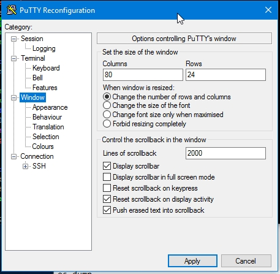
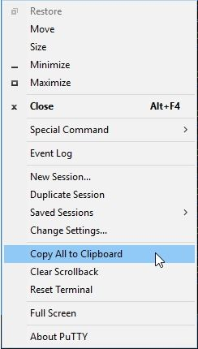

1 Linux Tips
-
Avoid the ssh prompt for asking the confirmation to add host to known_hosts:
-
add the line:StrictHostKeyChecking=no in either files:/etc/ssh/ssh_config, ~/.ssh/config, or specific it in command line:
ssh -o StrictHostKeyChecking=no.
-
add the line:StrictHostKeyChecking=no in either files:/etc/ssh/ssh_config, ~/.ssh/config, or specific it in command line:
-
Enable the X11 fowwarding defaultly:~/.ssh/config:
ForwardX11=yes -
Install the packages from RPM:
rpm2cpio packages.rpm | cpio -idv -
Querying the LSF group host information:
bmgroup -
switching the desktop:
ctrl + alt + left/right arrow - terminal color control sequence: here, also check the perl module: Term::ANSIColor for more referece.
- add the 'Window List' to the pannel: to make the windows like task icon.
-
tcsh: bind the arrow keys to search the command line history:
-
bindkey -k up history-search-backward -
bindkey -k down history-search-forward
-
-
find the broken links:
find -type l -follow -
Get the changelist number of current workspace:
p4 changes -m 1 #have -
vim:
set clipboard=unnamed: use the "* register as the holding place for yank and paste. -
vim: re-order the line of a range: create a mark c in front of range a,b, and then:
'a,'bg/^/m'c -
vim: copy matched lines in range into another location marked as mc:
'a,'bg/pat/y | normal 'cp -
gvim: display underscore as space, solution:
set linespace=5 -
firefox: the
shift + insertpaste from vim "+ register; the 'middle mouse button' paste from "* register(the primary selection). -
GNOME:
ctrl + alt + ArrowKey: switch the workspace -
xterm: the
shift + insertandmiddle mouse buttonpaste from vim "* register. -
xterm: show the chinese characters(it requires specific font library):
-
add following lines to ~/.Xresources
XTerm*faceName: Consolas:style=Regular:antialias=True:pixelsize=20 XTerm*faceNameDoublesize:AR PL Uming CN -
reload the resource files by
xrdb -merge .Xresources. - restart xterm.
-
add following lines to ~/.Xresources
- tcsh shell script can't be exited phenomenon may be caused by the locking of .history, it can be remedied by remove the .history. detail
-
awk perform calculation examples:
cat data|awk '{sum+=$1} END {print "Sum = ", sum}' cat data|awk '{sum+=$1} END {print "Average = ", sum/NR}' cat data|awk 'BEGIN {max = 0} {if ($1>max) max=$1 } END {print "Max=", max}' awk 'BEGIN {min = 1999999} {if ($1<min) min=$1} END {print "Min=", min}' -
bash:
set -o pipefail: defaultly, the return status of a pipeline is the exit status of the last command, unless the pipefail option is enabled. If pipefail is enabled, the pipeline's return status is the value of the last (rightmost) command to exit with a non-zero status, or zero if all commands exit successfully. this is useful to inject the a tee pipe for the commannd in makefile and also can exit immediately -
perforce: steps to rollback to early version:
p4 sync somefile#2 # retrieve the early version p4 edit somefile p4 sync somefile # sync to latest version p4 resolve -ay # resolve and accept your local copy. -
LSF: environment variable
LSB_DEFAULTQUEUEcontrol the default queue. - autocutsel keep sync of the Xwindow primary selection and cutbuffer clipboard.
-
ld: cannot find -lxxerrors can be digged by passing argument-Wl,-verboseto gcc/g++ for more debug information. -
xterm full screen shortcut:
ALT(left) + ENTER
2 putty tips
-
copy large quantity of linux text into window clipboard:
- Changes Putty Settings -> Window -> Lines of Scrollback to large enough to hold your contents. 
-
dump your lines into the terminal window buffer:
cat largefiles - Copy All to Clipboard 
-
paste the local machine clipboard into the remote vim
- ctrl + right click to bring up putty context menu, select paste
- create a shortcut and edit it to pass these option -load session -pw password to automate the login
- olor palette can be adjust to match the solarized color through regedit
-
ctrl + right clickorclick left top cornerwill popup the context menu - window/Appearance: Font Quality: clearType
- window Appearance: hide mouse pointer when typing in window
- choise: window->Behaviour: Full screen on Alt-Enter
- window/Translation: Remote character set: utf-8
3 windows tips
-
let command window display the unicode character correctly, activate the code page to UTF-8 by:
chcp 65001